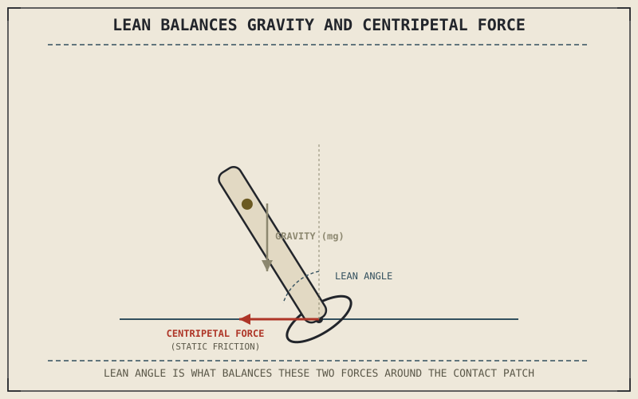

A motorcycle holding a steady curve at constant speed isn't actually in equilibrium the way it looks — it's continuously accelerating, every single instant, even though its speed never changes. That sounds like a contradiction until acceleration is understood correctly: a change in direction is itself an acceleration, and generating that constant directional change is the entire physical job cornering asks of a motorcycle's tyres.
Chapter 8.2 closed by promising this chapter would explain cornering forces, built directly on the static friction it established. But this chapter is also a longer-standing debt: Chapter 1.2 promised Part VIII would eventually supply "the full vector treatment of lean angle, cornering force, and load transfer" only sketched qualitatively that early, and Chapter 4.7 repeated the same promise before covering lean angle's practical ceiling without the underlying math. This chapter is where both come due.
Centripetal Acceleration: Constant Turning, Constant Force
Any object moving along a curved path at constant speed is accelerating toward the center of that curve — this is centripetal acceleration, and it grows with the square of speed and shrinks with a larger turn radius, meaning a fast, tight corner demands dramatically more of it than a slow, sweeping one. Producing that acceleration requires a real force pointed toward the corner's center, called centripetal force, and for a motorcycle, that force comes from exactly one place: the static friction Chapter 8.2 just established as what a gripping tyre actually generates at its contact patch. Cornering, at its physical core, is nothing more than the tyre supplying enough centripetal force, through friction, to bend the motorcycle's path into the curve the rider wants.
Why Leaning Is the Answer, Not a Side Effect
Chapter 6.3 already described how a motorcycle's contact patch migrates toward the tyre's shoulder as it leans, and this chapter explains why that lean happens at all. Generating centripetal force through the contact patch, while the motorcycle's mass sits well above that contact patch, creates a toppling moment that would simply tip the bike over if it stayed upright — leaning into the corner shifts the motorcycle's weight so that gravity's pull and the cornering force balance around the tyre's contact patch instead of fighting each other. This is why lean angle isn't a stylistic choice or a side effect of cornering; it's the specific mechanical solution that lets a two-wheeled vehicle generate centripetal force at all without falling over in the process.
A motorcycle doesn't lean because it's cornering — it leans because leaning is the only way a two-wheeled vehicle can generate the centripetal force cornering requires without the resulting toppling moment simply tipping it over.

A leaned motorcycle shown from behind mid-corner, with gravity pulling straight down through its center of mass, static friction at the contact patch pointing toward the corner's center as centripetal force, and the two forces balancing around the lean angle.
Why Cornering Fast Demands More Lean and More Grip Together
Because centripetal force requirements grow with the square of speed, cornering faster through the same-radius turn demands both a steeper lean angle to balance the larger toppling moment and more static friction force from the tyre to actually generate that larger centripetal force. Both demands draw on the same friction circle Chapter 6.4 and Chapter 8.2 already described, which is why cornering hard leaves so little friction circle capacity spare for simultaneous braking or accelerating — the centripetal force alone can already be using most of what the tyre's static friction has available.
A Common Misconception, Cleared Up Early
It's easy to think a motorcycle corners because the front wheel is simply pointed in a new direction, the way a shopping cart's front wheels swivel. Chapter 4's chassis geometry chapters already established that steering input at low speed does turn the wheel, but at real cornering speed, the actual physical mechanism generating the turn is centripetal force from tyre friction acting on a leaned motorcycle, not the front wheel's angle relative to the frame. This is precisely why countersteering — briefly mentioned in Chapter 8.1 and covered fully next — feels so counterintuitive: initiating a lean, not simply turning the handlebars, is what actually starts the cornering process.
Where This Leads
Understanding centripetal force sets up the actual mechanism by which a rider initiates that lean in the first place — a mechanism that famously involves briefly steering in the opposite direction from the intended turn. Chapter 8.4 turns to countersteering directly.
Key Concepts to Remember
- Cornering at constant speed is still acceleration, since a change in direction is itself centripetal acceleration, generated by static friction at the tyre's contact patch.
- Leaning is the mechanical solution that lets a motorcycle balance gravity's toppling moment against cornering force, rather than a stylistic side effect of turning.
- Centripetal force demand grows with the square of speed, which is why faster cornering through the same radius demands both more lean and more available friction.
Cross-References
| ← Ch. 1.2 | Sketched lean angle and cornering force qualitatively and promised Part VIII would supply the full vector treatment; this chapter delivers it. |
| ← Ch. 4.7 | Covered lean angle's practical ceiling and repeated the promise of a full derivation later in the book; this chapter is that derivation. |
| ← Ch. 8.2 | Established static friction as a tyre's grip mechanism; this chapter identifies static friction as the direct source of centripetal cornering force. |
| ← Ch. 6.3 | Described the contact patch migrating under lean; this chapter explains the underlying force balance that makes leaning necessary in the first place. |
| ← Ch. 6.4 | Established the friction circle shared between cornering and braking; this chapter shows centripetal force as a direct, often dominant draw on that same circle. |
| → Ch. 8.4 | Covers countersteering, the mechanism a rider actually uses to initiate the lean this chapter explained is necessary. |